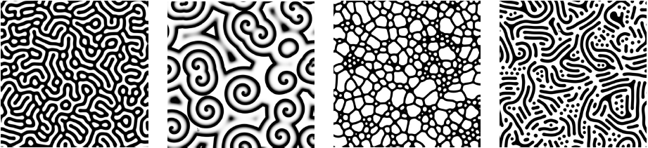
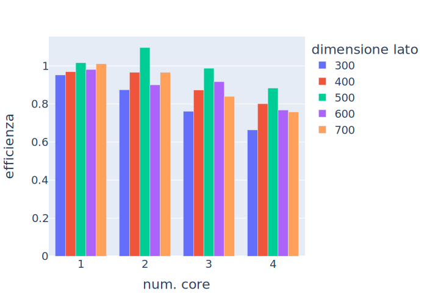

Modello Gray-Scott parallelo
Giuseppe Marino
19 gennaio 2021
Modello di Gray-Scott
Modella un processo che consiste reazioni e diffusioni, descritto tramite un sistema di equazioni.
Descrive la reazione chimica tra due sostanze U e V che si diffondono nello spazio in funzione del tempo.
Durante la reazione si consuma U per produrre V.
Nella simulazione rappresentiamo le densità u e v nel tempo e nello spazio usando una successione di matrici quadrate.
I parametri del sistema
In questo modello sono presenti due parametri
- F è il feeding rate:
regola la velocità con cui U viene
reintrodotta
- k è il decay rate: regola la velocità con cui V viene rimossa

Al variare di F e k si ottengono vari pattern, alcuni dei quali simili a quelli osservati in organismi viventi.
Le reazioni
Il sistema modella le seguenti reazioni chimiche:
- U + 2V \to 3V
- V \to P
- U reagisce in V in presenza di V (catalizzatore)
- V decade in P (sostanza inerte)
Le diffusioni
Le sostanze si diffondono nello spazio secondo le velocità di diffusione D_u e D_v.
Nel nostro caso D_u = 2D_v per garantire la formazione di pattern.
Le equazioni
Giungiamo ad un sistema di due equazioni che descrivono il comportamento dei due reagenti:
\frac{\partial u}{\partial t}=-u v^{2}+F(1-u)+D_{u} \nabla^2 u
\frac{\partial v}{\partial t}=u v^{2}-(F+k) v+D_{v} \nabla^2 v
Nella simulazione
Il laplaciano è valutato numericamente secondo la formula
\nabla^2 u_{i, j} \approx u_{i, j-1}+u_{i-1, j}-4 u_{i, j}+u_{i+1, j}+u_{i, j+1}
Si ricorre al metodo di Eulero per integrare la derivata temporale
Codice sequenziale
I punti salienti
Inizializzazione
Inizializziamo due matrici che rappresenteranno le densità dei due reagenti nello spazio.
Inseriamo in punti a caso delle concentrazioni non nulle di v
Laplaciano
Definiamo la seguente funzione per la valutazione del laplaciano che risolve il problema ai bordi impiegando un dominio periodico
Gray-Scott
Per ogni iterazione viene restituito un output, all’interno di ogni interazione avvengono più passi di evoluzione del dominio.
L’output consiste nelle matrici u e v aggiornate secondo le variazioni descritte dallo schema numerico.
Codice parallelo
L’impiego di MPI4PY
La parallelizzazione
Per rendere il codice sequenziale parallelizzato tramite MPI occorre:
- Eseguire lo scatter preliminare delle matrici di partenza
- Gestire i send e i receive per la comunicazione dei bordi
- Eseguire un gather prima di restituire le matrici
Definizione dei rank
Ad ogni core attribuiamo un core precedente ed un core successivo
Per i core “interni” consideriamo i rank precedenti e successivi
Per il primo core il precedente è l’ultimo
Per l’ultimo core il successivo è il primo
...
curr_rank = comm.rank
prev_rank = (curr_rank - 1) % comm.size
next_rank = (curr_rank + 1) % comm.size
...anche perché il dominio è periodico
Inizializzazione
Scatter
Ripartiamo le matrici del nostro dominio in in bande orizzontali di equa dimensione mediante lo scatter del dominio del core 0
A ciascun core è assegnato un sottodominio sul quale applicare l’algoritmo
Laplaciano
Occorre modificare il codice per valutare il laplaciano
Gestire il problema ai bordi richiede la comunicazione tra core adiacenti
def laplacian(r):
comm.Isend(r[0], dest=prev_rank)
comm.Isend(r[-1], dest=next_rank)
next_row = np.empty(r[0].shape)
prev_row = np.empty(r[0].shape)
comm.Recv(next_row, source=next_rank)
comm.Recv(prev_row, source=prev_rank)
r = np.vstack((prev_row, r, next_row))
r = np.vstack((r[:, -1], r.T, r[:, 0])).T
return ( r[ :-2, 1:-1] +
r[1:-1, :-2] - 4 * r[1:-1, 1:-1] + r[1:-1, 2:] +
+ r[2: , 1:-1] )Gray-Scott
La funzione per valutare Gray-Scott resta pressocché invariata, basta aggiungere il gather delle matrici prima di restituirle
def gray_scott_MPI(. . .):
. . .
for _ in range(iterations):
for _ in range(iteration_steps):
reaction_rate = sub_u * sub_v * sub_v
sub_u += (u_diff_rate * laplacian(sub_u) -
reaction_rate + feed_rate * (1 - sub_u))
sub_v += (v_diff_rate * laplacian(sub_v) +
+ reaction_rate - (feed_rate + decay_rate) * sub_v)
comm.Gather(sub_u, u, root=0)
comm.Gather(sub_v, v, root=0)
if curr_rank == 0:
yield u.copy(), v.copy()Valutazione delle performance
MacBook Air 2020
Apple Silicon M1, 8 GB RAM, macOS 12.1
iterations = 10iteration_steps = 250
Tempo impiegato
Guadagno in velocità
Efficienza
Troppi gather?
Tempo impiegato dalle comunicazioni MPI
Matrici 300x300

Matrici 400x400

Matrici 500x500

Matrici 600x600

Matrici 700x700

Considerazioni sul tipo di dato
Float 32 vs Float 64
I grafici precedenti sono il risultato dell’utilizzo di matrici di tipo float a 32 bit.
Prove preliminari utilizzando dei float a 64 bit portavano a dei risultati inaspettati.
Tempi di calcolo
float 32 
float 64 
Guadagno in velocità
float 32 
float 64 
Efficienza
float 32 
float 64 
Considerazioni
Le operazioni con float 64 impiegano circa il doppio del tempo rispetto a quelle con float 32.
A parità di dimensioni, una matrice float 64 occupa il doppio della memoria rispetto ad una di tipo float 32.
Considerazioni
Arrivato ad un certo punto assistiamo ad un peggioramento sostanziale:
È evidente con le matrici 600x600 e 700x700, nelle esecuzioni con 3 e 4 core
Comunicazioni troppo impegnative?
Tempo impiegato dalle comunicazioni 600x600
float 32
float 64 
Tempo impiegato dalle comunicazioni 700x700
float 32
float 64 
Alcune teorie
Ad esempio, una riga inviata o ricevuta può occupare 700 celle \times 64 bit = 44.800 bit = 5.600 byte
Considerando il mio processore Apple Silicon M1:
Larghezza di banda UMA: 68.25 GB/s
Cache di primo livello: 192 KB
Conclusioni
L’impiego di MPI in una simulazione di un sistema Gray-Scott risulta valido per accelerare le elaborazioni, anche sul mio semplice personal computer.